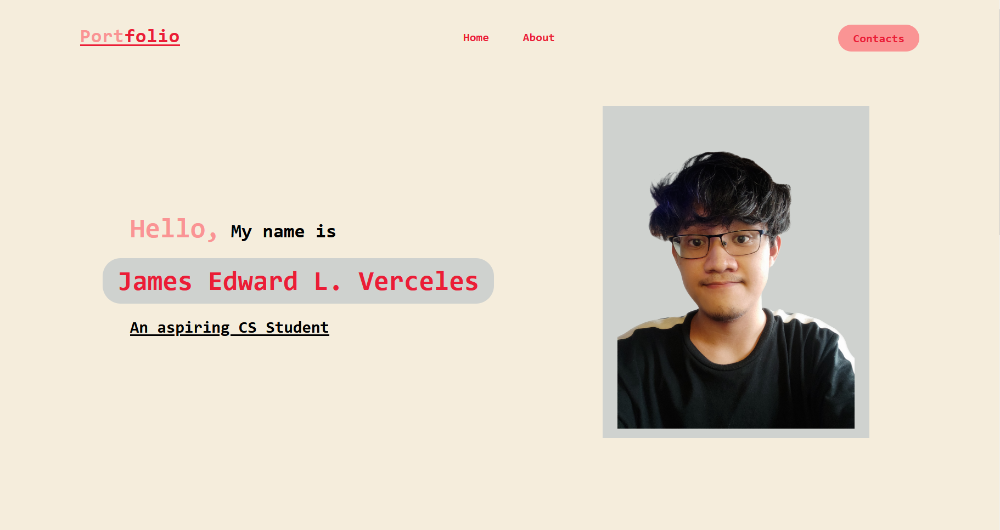
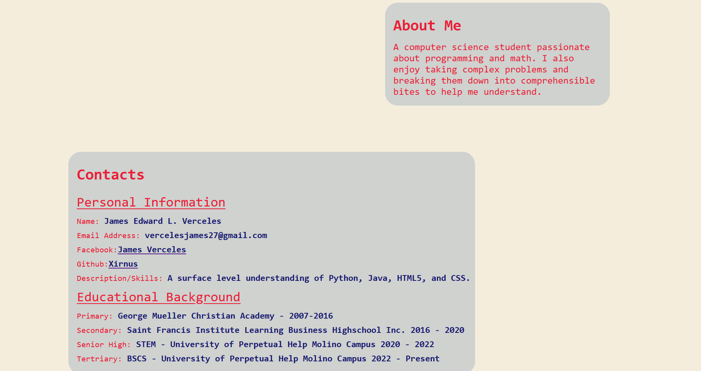
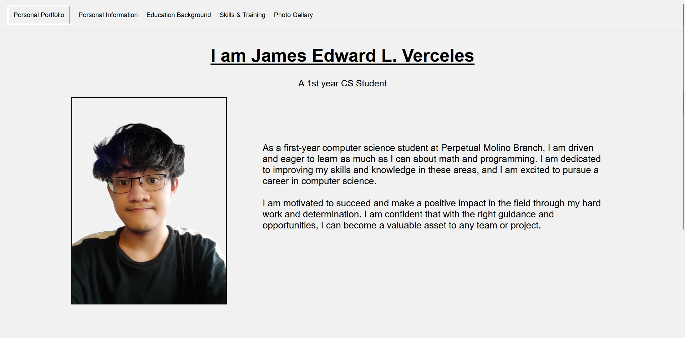
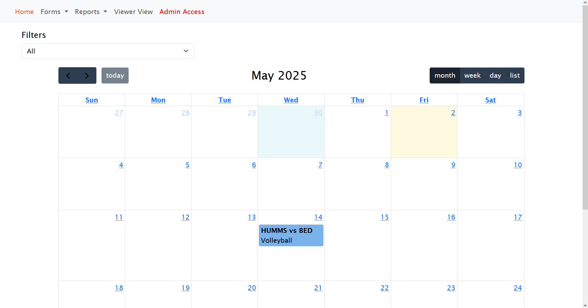
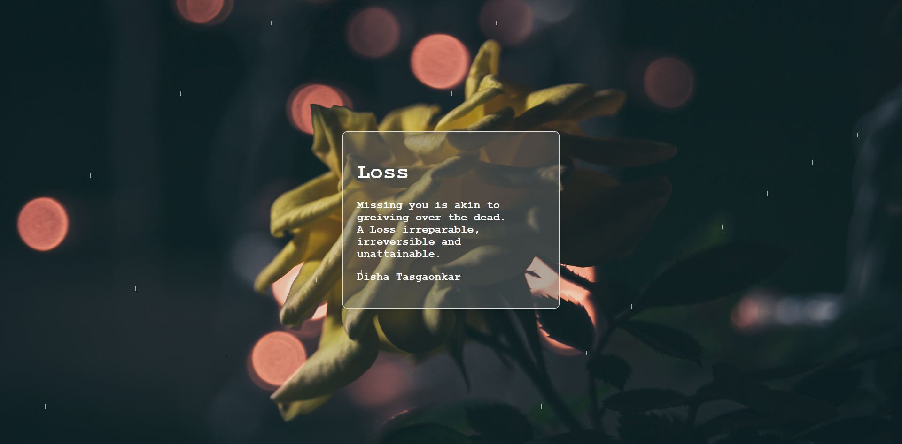
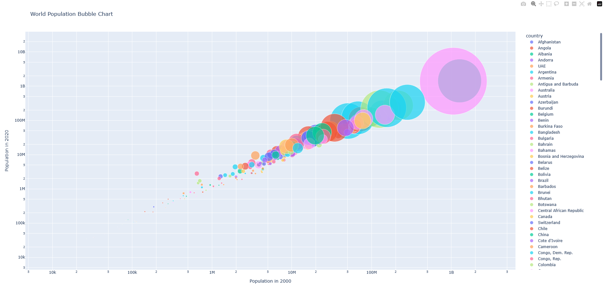
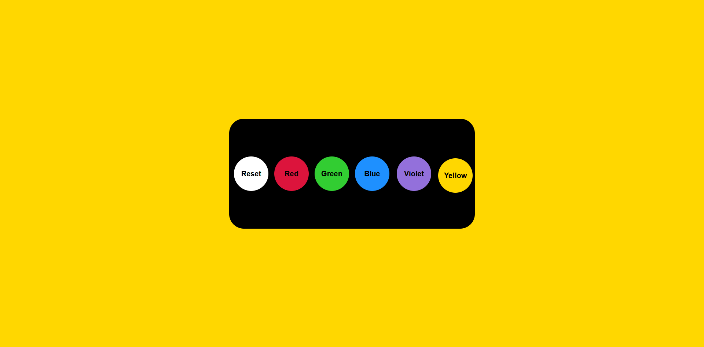
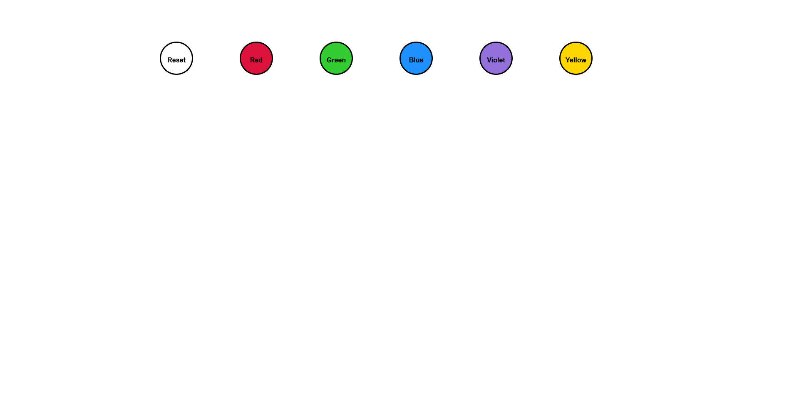
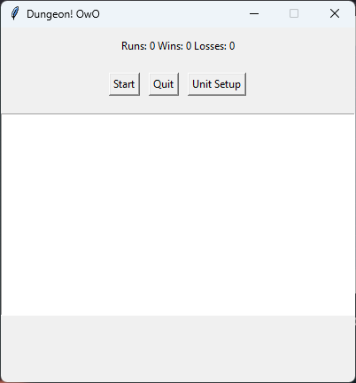
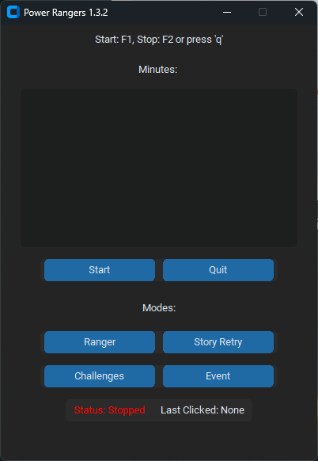

Personal Resume V1 – Built with HTML & CSS.

Personal Resume V1 – Built with HTML & CSS.

Personal Resume V2 – Built with HTML & CSS.

Game Calendar, Made Using PHP, HTML, CSS and Bootstrap

Poem Website, 2nd JavaScript Website

A World Population Chart Created Using Python

Background Changer Website Using Bouncing Balls (JavaScript)

Balls Bouncing on Walls – JavaScript

My First Macro Used In A Roblox Game Created Using Python

My Second Macro Used In A Roblox Game Created Using Python